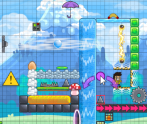
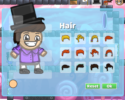

<div class="container space-filler">
	<div class="content-container">
		<div class="row">
			<div class="col-md-12 col-lg-3">
				<h2>Factsheet</h2>
				<ul class="fact-sheet">
					<li><b>Developer:</b> Frame-Perfect Studio; Based in Montreal, Canada</li>
					<li><b>Status:</b> Available</li>
					<li><b>Platforms:</b> PC, Mac and Linux (<a href="{{itchAddress}}">itch.io</a>)</li>
					<li><b>Website:</b>&nbsp;<a href="http://jumpai.net/">jumpai.net</a></li>
					<li><b>Price:</b> Free</li>
					<li><b>Availability:</b> Digital Download</li>
					<li><b>Languages:</b> English, French, Spanish, Turkish</li>
					<li><b>File Size:</b> ~150 MB</li>
					<li><b>Contact:</b>&nbsp;<a href="mailto:{{emailAddress}}">{{emailAddress}}</a></li>
					<li><b>Social:</b>&nbsp;
						<a href="{{twitterAddress}}">Twitter</a>,
						<a href="{{discordAddress}}">Discord</a>,
						<a href="{{youtubeAddress}}">Youtube</a>,
						<a href="{{redditAddress}}">Reddit</a>,
						<a href="{{facebookAddress}}">Facebook</a>
					</li>
				</ul>
			</div>
			<div class="col-md-12 col-lg-9">
				<div class="article-wrapper">
					<h2>Jumpaï Press Kit</h2>
					<p>
						Welcome to Jumpaï’s press kit. On this page you should find any info you need to post articles or to learn
						about Jumpaï. If you need any additional information let us know and we will make it available.
					</p>
					
					<h2>Description</h2>
					<div class="row">
						<div class="col-lg-4">
							<div class="desc-card desc-card-create">
								<span>Create</span>
							</div>
						</div>
						<div class="col-lg-4">
							<div class="desc-card desc-card-share">
								<span>Share</span>
							</div>
						</div>
						<div class="col-lg-4">
							<div class="desc-card desc-card-compete">
								<span>Compete</span>
							</div>
						</div>
					</div>
					<p>
						<!-- Create -->
						<!-- Share -->
						<!-- Compete -->
						Jumpaï is a platformer where you get to create levels and share them online to play with others. By igniting
						a community rather than a telling story, we aim to be a vessel of expression coming from both level creation
						and player customization. Level creation is made extra easy, so that anyone can create the level they
						imagine. As the community grows, players are free to play from a constantly growing source of tricky
						puzzles, hard platforming challenges, funny trolls or relaxing adventures.
					</p>
					
					<h2>Features</h2>
					<ul class="feature-list">
						<div class="floating-card floating-card-right">
							
						</div>
						<li>
							<b>Over 30 Fun and Unique Items</b>
							<br/>
							With over 30 items that interact with each other in different ways, you will never run out of ideas when
							it comes to level creation. An example is the iconic frisbee that can be thrown by the player to be jumped
							on or used to trigger switches that can turn off conveyors and electric barriers. Another example would be
							the electric fan that can be used both to blow the player holding an umbrella high into the air or as a
							deadly trap pushing off the stage players wearing a bubble.
						</li>
						<li>
							<b>Fully-Integrated Level Editor</b>
							<br/>
							Transform your idea into a playable level from a level editor packed with content creation tools. The
							editor can be used to create your own levels or open up any other level.
						</li>
						<li><b>
							Race mode</b>
							<br/>
							Compete in real-time with your friends to see who can finish the level first! You can invite your friends
							to race against you.
						</li>
						<li><b>
							Level browsing & Stars</b>
							<br/>
							Browse the top rated levels easily from anywhere in the game! The best levels naturally come up to the top
							as players leave stars to the levels they like. The game distinguishes between finished and unfinished
							creations, preventing the annoyance of playing an unfinished level without knowing it!
						</li>
						<li><b>
							Biomes</b>
							<br/>
							Select your biome as you create your level using a brush to paint biomes to make cool transitions. Biomes
							not only change the background, but also the decorations used in the level, giving access to a wider range
							of items allowing for unique styles.
						</li>
						<li><b>
							Controller Support</b>
							<br/>
							All controls are bindable, including ones for the editor!
						</li>
						<li><b>
							Leaderboards & Stats</b>
							<br/>
							Try to increase your score by getting top positions on leaderboards of popular levels!
						</li>
						<div class="floating-card floating-card-left">
							
						</div>
						<li>
							<b>Player Customization</b>
							<br/>
							Give a unique look to your character to create your own in-game identity!
						</li>
						<li><b>
							Replays</b>
							<br/>
							Watch the world record replays to see how they finish so fast! Any replays can be watched from the
							leaderboard and you can even export them to make videos if you want to show off your skills!
						</li>
					</ul>
					
					<h2>History</h2>
					<p>
						Originally named “SocialPlatformer”, the project started as a hobby in late 2016. Inspiration for Jumpaï
						came from watching my favourite Mario Maker streamers. I kept track of the constructive criticism they had
						for that game as I was making Jumpaï. Many wonderful ideas such as jumping off frisbees and having snappy
						bear traps came from unintended uses of Mario Maker’s game elements. Being experienced with multiplayer game
						development and enjoying the MMO feel in general, I decided to make multiplayer one of the core components
						of Jumpaï. As time went by, programmer assets got replaced by art from a professional and new features made
						the game more attractive in general.
					</p>
					
					<h2>Video</h2>
					<p>0.5 trailer:</p>
					<iframe width="560" height="315" style="max-width: 100%;"
					        src="https://www.youtube.com/embed/EusrNr85pTo?modestbranding=1&rel=0" frameborder="0"
					        allow="accelerometer; autoplay; encrypted-media; gyroscope; picture-in-picture"
					        allowfullscreen></iframe>
					<p>0.3 trailer:</p>
					<iframe width="560" height="315" style="max-width: 100%;"
					        src="https://www.youtube.com/embed/NgpSvalo2Lk?modestbranding=1&rel=0" frameborder="0"
					        allow="accelerometer; autoplay; encrypted-media; gyroscope; picture-in-picture"
					        allowfullscreen></iframe>
					<br/>
					<br/>
					
					<h2>Screenshots</h2>
					<p>
						<a href="{{screenshotPackage}}" title="Download screenshots in a zip file" target="_blank">Download all in a
							zip file.</a>
					</p>
					
					<div class="row">
						<div *ngFor="let screenshot of screenshots" class="col-lg-6 col-md-12">
							<a class="screenshot" href="../{{screenshot}}" target="_blank">
								
							</a>
							<br/>
						</div>
					</div>
					<br/>
					
					<h2>Gifs</h2>
					<p>
						<a href="{{gifPackage}}" title="Download gifs in a zip file" target="_blank">Download all in a zip file.</a>
					</p>
					<div class="row">
						<div *ngFor="let gif of gifs" class="col-lg-6 col-md-12">
							<iframe [src]="('https://gfycat.com/ifr/' + gif) | safe" frameborder="0" scrolling="no" allowfullscreen
							        width="100%" height="247px"></iframe>
						</div>
					</div>
					
					<h2>Logos</h2>
					<p>
						<a href="{{logoPackage}}" title="Download logos in a zip file" target="_blank">Download all in a zip
							file.</a> (SVG and PNG included)
					</p>
					<div style="text-align: center">
						
						<br/>
						
					</div>
				</div>
			</div>
		</div>
	</div>
</div>